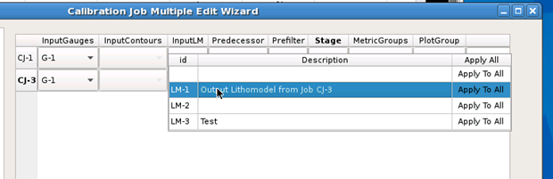

For situations where multiple calibration
jobs need their components changed, use the Multiple Edit utility
in Calibre nmModelflow to quickly adjust selected jobs.
Note: This wizard is also used for the Copy Descendants button;
all descendants of the selected job(s) are added to the list of
edited jobs.
Procedure
- Switch
to the Calibration Job Manager tab.
- Select
at least two calibration jobs and click Multiple Edit.
- In the
Job Copy page, click any cell with a dropdown arrow to display the
available choices in the database for that column.

Make a selection for the cell, or click Apply to All to
the right of the choice to apply the change to every item in the
list.
When you have finished making changes, click Next.
- Each job
is listed as a separate Layer Mapping For CJ-x page.
For each job selected, adjust the layer mapping as needed, then
click Next.
- On the
Finish page, inspect the commands generated to make the changes,
and click Finish to run the changes.